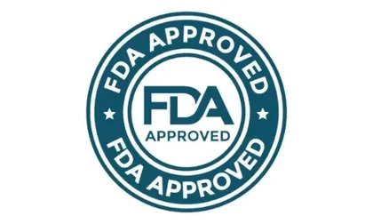

"GLP-1" is one of the most searched terms in wellness right now, largely because of prescription GLP-1 receptor agonist medications. GLPro Patches uses GLP-1 language in its own marketing — "supports GLP-1 natural production" — and it's important to understand how that claim differs from the prescription drugs people usually mean when they say "GLP-1."
GLP-1, or glucagon-like peptide-1, is a hormone your body produces naturally, primarily in the gut, in response to eating. It plays a role in several processes, including insulin release and signaling fullness to the brain. This is basic human physiology — everyone produces some level of GLP-1 naturally, regardless of any product or medication.
Prescription GLP-1 receptor agonist medications are drugs, approved and regulated by the FDA for specific medical uses, that work by mimicking or amplifying GLP-1 activity at a pharmaceutical dose, administered by injection. These are prescription medications with documented clinical trial data, specific approved uses, and medical oversight requirements.
GLPro Patches' claim is meaningfully different: it's a wellness claim about supporting your body's own, already-existing natural GLP-1 production — not about introducing a pharmaceutical GLP-1 agonist into your system. This is the same general category of claim made by many botanical wellness products that use ingredients associated, in general nutrition research, with digestive or metabolic processes.
This is genuinely one of the most important things to understand before buying any "GLP-1 support" wellness product, GLPro Patches included: it is not a substitute for, nor equivalent to, a prescription GLP-1 medication. If you are currently taking a prescription GLP-1 medication for diabetes or weight management, or considering one, that's a conversation for your doctor — not a decision to make based on a wellness patch's marketing language.
As of this writing, no transdermal patch delivering an actual pharmaceutical GLP-1 receptor agonist has received FDA approval. Any product claiming to deliver that specific pharmaceutical effect through a skin patch should be approached with significant skepticism. GLPro Patches' own claim — "natural production" support via a botanical blend — is a different and more modest claim than that, and it's worth reading it that way rather than as a GLP-1-medication alternative.
The GLP-1 claim sits alongside blood sugar support (see our blood sugar article) and appetite control (see our appetite control article) as part of the brand's overall metabolic wellness positioning. Read our full benefits article for how these pieces connect.
If "GLP-1 support" is specifically what drew you to GLPro Patches, it's worth asking yourself: am I looking for general wellness support, or am I actually looking for the effects associated with prescription GLP-1 medication? If it's the latter, a wellness patch — any wellness patch, not just this one — is very unlikely to deliver that, and a conversation with a healthcare professional about appropriate medical options is the right next step.
GLPro Patches' "natural GLP-1 production" claim refers to supporting your body's own existing hormone activity through a botanical blend — not to delivering a pharmaceutical GLP-1 drug. Understanding this distinction is the single most important piece of context for evaluating this product honestly. For current pricing and the 60-day guarantee, see our GLPro Patches homepage.
When you see "GLP-1" on any wellness product's packaging, including GLPro Patches, read it as a claim about supporting your body's own natural hormone activity — not as a substitute for, or equivalent to, prescription GLP-1 medication. That one habit of reading carefully will serve you well across this entire product category, not just this one brand.
All orders are backed by a 60-day money-back guarantee.
Order GLPro Patches Now → GLPro Patches
GLPro Patches